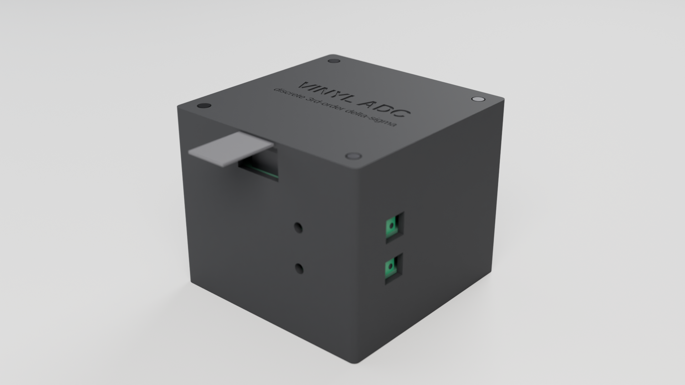
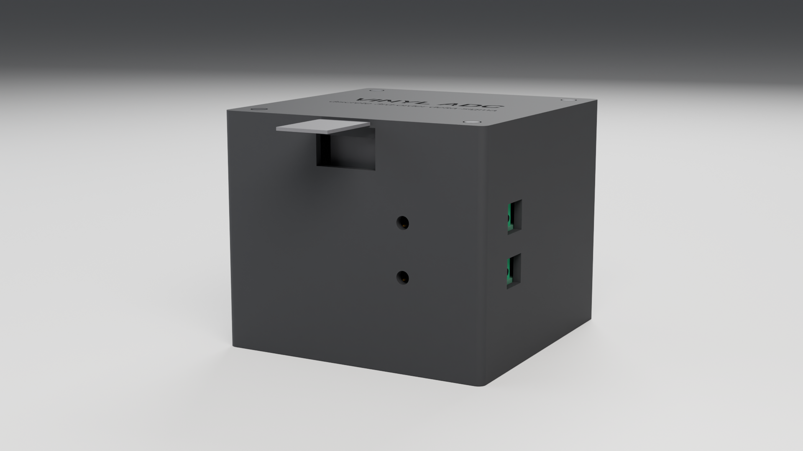
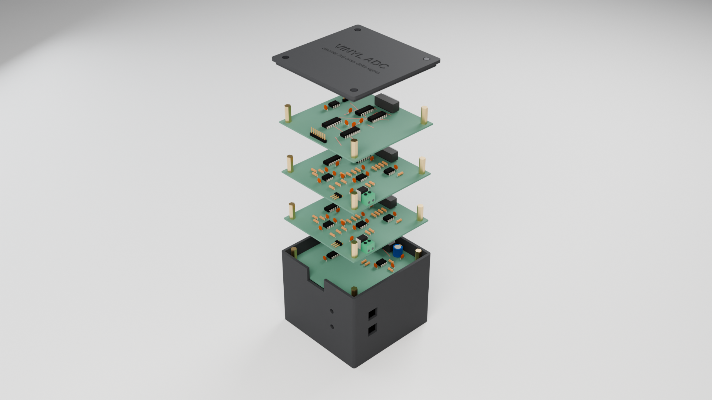

Discrete delta-sigma · stereo · 24-bit / 48 kHz
Vinyl ADC
A stereo analogue-to-digital converter for a turntable that contains no ADC chip at all. Each channel is a third-order continuous-time delta-sigma modulator built from TL07x op-amps, an LM311 comparator and 74HC logic, clocked at 1.536 MHz from a crystal oscillator can; the two 1-bit streams are interleaved onto a standard I²S bus and decimated to 24-bit / 48 kHz PCM on a Raspberry Pi. Four single-sided, CNC-milled 100 × 100 mm boards stack on M3 standoffs inside a two-part 3D-printed enclosure.

Specifications
Every figure below is taken from the repository (README, docs/design-notes.md, the .kicad_pcb files and the derived enclosure/assembly.json). Anything not derivable is marked TBD rather than guessed.
Conversion
- Topology
- 3rd-order CT ΔΣ, CIFB + resonator, ELD-compensated
- Modulator clock
- 1.536 MHz (OSR 32)
- Master clock
- 6.144 MHz crystal oscillator can
- Output
- 24-bit / 48 kHz PCM (CIC + FIR on the Pi)
- SNR (20 kHz band)
- ≈ 68 dB simulated, −8 dBFS
- Full scale
- 2.47 Vrms at max trimmer
Interfaces (from the boards)
- Analogue in
- 2 × 5.08 mm screw terminal (J20, L and R tiers)
- Gain
- 2 × multi-turn trimmer (RV20, per channel)
- Digital / power
- 8-way header to Pi GPIO (J2: BCLK 3.072 MHz, LRCLK 48 kHz, DIN, +5 V, GND)
- Inter-board bus
- 16-way ribbon (2×8 header on every tier)
- Power
- +5 V from the Pi; −5 V by on-board charge pump
- RCA / USB
- TBD — no such footprints on the boards
Mechanical
- Enclosure (outer)
- 107.0 × 107.0 × 90.4 mm
- Cavity
- 101.0 × 101.0 mm (0.5 mm clearance)
- Wall / floor / lid
- 3.0 / 3.0 / 3.0 mm
- Boards
- 4 × 100.0 × 100.0 × 1.6 mm
- Tier pitch
- 19.6 mm (M3 × 18 standoffs)
- Mounting
- 4 × M3 at 6 mm inset, heat-set inserts
- Material
- Matte PLA / PETG, FDM, no supports
Gallery
1920 × 1080 Cycles renders. The enclosure is the exported STL, the boards are the kicad-cli GLB exports with their stock 3D models; the only invented bodies are the ones listed in DECISIONS.md.



The stack, in numbers
Heights are derived, not chosen: the tallest part on any board (the 470 µF capacitor and the 2.2 µF film capacitor, both 11.6 mm from the GLB exports) and the 16-way IDC socket on the bus header set an 18 mm standoff. All Z values are measured from the outside of the floor.
| Tier | Board | Board top Z | Tallest part |
|---|---|---|---|
| 4 | digital — clock, interleave, Pi interface | 69.4 mm | 10.1 mm |
| 3 | channel L modulator | 49.8 mm | 11.6 mm |
| 2 | channel R modulator (same artwork, jumper R) | 30.2 mm | 11.6 mm |
| 1 | power & reference | 10.6 mm | 11.6 mm |
Wall cutouts, at the connector coordinates from the boards
| Cutout | Wall | Ref (KiCad x, y, rot) | Enclosure position | Size |
|---|---|---|---|---|
| LINE IN R window | +X (right) | J20 tier 2 (115.80, 100.75, 90°) | Y 19.3–31.3, Z 30.5–41.5 | 12 × 11 mm |
| LINE IN L window | +X (right) | J20 tier 3 (115.80, 100.75, 90°) | Y 19.3–31.3, Z 50.1–61.1 | 12 × 11 mm |
| GAIN R access | −Y (front) | RV20 tier 2 (92.14, 108.42, −90°) | X 75.64, Z 35.2 | Ø 5 mm |
| GAIN L access | −Y (front) | RV20 tier 3 (92.14, 108.42, −90°) | X 75.64, Z 54.8 | Ø 5 mm |
| Pi ribbon notch | −Y (front) | J2 tier 4 (60.22, 115.60, 90°) | X 40.45–64.77, Z 72.4–87.4 | 24.3 × 15 mm, open top |
How it was built
One pipeline, every step scripted and re-runnable from a clean checkout (exact commands in DECISIONS.md).
-
KiCad → geometry
extract_geometry.pyparses the three.kicad_pcbfiles: 100 × 100 mm outlines, four Ø3.2 mm holes at 6 mm inset, and the position and rotation of every connector. -
3D export
kicad-cli pcb export glb(andstep) with copper, silk and mask, thenglb_heights.pyreads the exact height of every 3D model from the glTF accessors. -
Parametric enclosure
make_params.pyturns those numbers intovinyl_adc_params.scad; OpenSCAD builds the base and lid and exports the STLs, whichcheck_stl.pyverifies as watertight. -
Blender
build_scene.pyimports the GLBs and STLs, adds standoffs, ribbons and the listed placeholders, lights a neutral studio and renders four 1080p Cycles frames — headless, reproducibly.